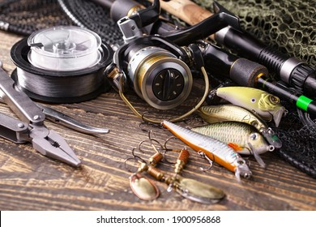
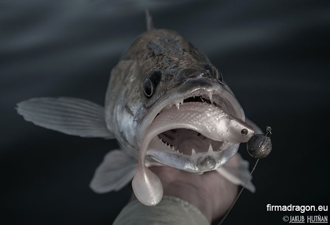
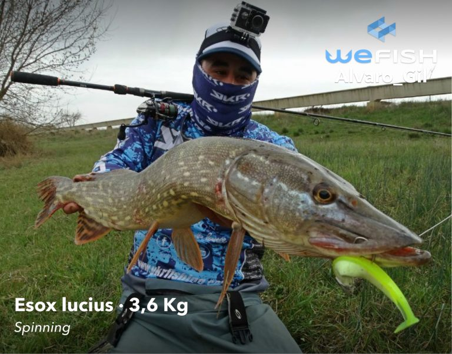

Spin fishing is an angling technique where a spinning lure is used to entice the fish to bite. Spin fishing is used in both freshwater and marine environments. Spin fishing is distinguished between fly fishing and bait cast fishing by the type of rod and reel used. There are two types of reels used when spin fishing, the open faced reel and the closed faced reel. The spin fishing rod has no trigger attached to the base of the fishing rod. This is what differentiates the spin fishing rod from the bait casting fishing rod. Read more...
Fishing

The zander (Sander lucioperca), sander or pikeperch, is a species of ray-finned fish from the family Percidae, which includes the perches, ruffes and darters. It is found in freshwater and brackish habitats in western Eurasia. It is a popular game fish and has been introduced to a variety of localities outside its native range. It is the type species of the genus Sander.Read more...
Zander

Esox is a genus of freshwater fish commonly known as pike or pickerel. It is the type genus of the family Esocidae. The type species of the genus is Esox lucius, the northern pike.
Ancestral Esox species had been present in Laurentia (which later became North America) and Eurasia since the Paleogene. Modern large pike species are native to the Palearctic and Nearctic realms, ranging across Northern America and from Western Europe to Siberia in North Asia.
Pikes have the elongated, torpedo-like shape typical of predatory fishes, with sharply pointed heads and sharp teeth. Their coloration is typically grey-green with a mottled or spotted appearance with stripes along their backs, providing camouflage among underwater weeds, and each individual pike marking patterns are unique like fingerprints. Pikes can grow to a maximum recorded length of 1.83 m (6 ft), reaching a maximum recorded weight of 35 kg (77 lb).Read more...